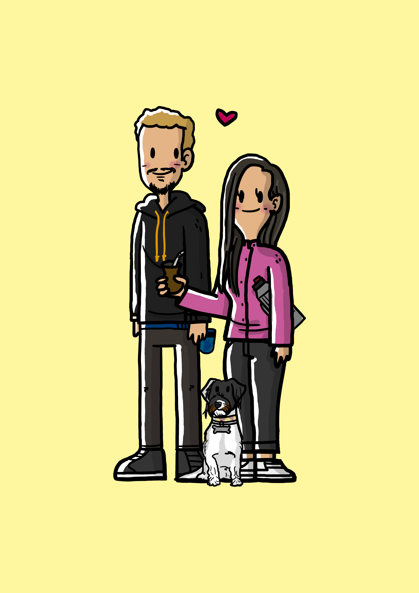

Presente!

Oi, Mozi
Tudo bem?
Desculpa vir aqui atrapalhar sua viagem. Não quero te tomar muito tempo pq vc precisa dormir (se acordou por causa da mensagem) ou tem que tomar café logo pq tem o cronograma da viagem pra seguir. Então vou tentar ser breve no texto.
Hoje vim no primeiro minuto do nosso dia, mas pra ser “diferentão” vim por outro caminho. Já que nesse último ano tenho estudado essas coisas de programação e tecnologias das internet e coisa assim, resolvi unir o útil ao agradável e vim trabalhando nesse “presente/recado” online, mas que é de uma forma diferente do que por email ou power point. Resolvi criar esse site por alguns motivos. Um deles é que aprendi a criar sites esse ano e como uma coisa nova que eu aprendi achei legal usar isso para algo útil, então desde que comecei aprender sobre, já pensei em fazer um site presente para você, só não sabia direito ainda como fazer isso. Além disso nesses últimos tempo pensei num presente para nosco que poderia ser entregue aqui pelo site e de uma forma diferente e diver (mais pro final eu te mostro).
Bom, mas chega de falar sobre o site, isso é o que menos importa.
5 anos O.o
Quanta coisa né, mas ao mesmo tempo da tanta vontade de que seja muito mais e que tá passando rápido, né? Quando tenho esse sentimento de que tudo tá indo muito rápido gosto de pensar em coisas específicas e que já vivemos ou de outras nem tão específicas, mas que aconteceram já muitas vezes. Isso me dá um sentimento de que na verdade, embora esses 5 anos tenham passado rápido, já experimentamos muitas coisas juntas. Por exemplo, pensa em quantos cafés da manhã já compartilhamos, desde a Vicente, passando pelo Xelri e agora no Saqua. Isso sem contar cafés da manhã por aí (hotéis, viagens ou fora de casa). É bastante né? E os chimas então? Nossa já teve tanto chima em casa e fora de que nem me atreveria a citar com medo de deixar de fora os mais importantes e gostosos (que acho que são todos). Tava aqui pensando enquanto escrevo agora e acho que os mais gostosos talvez sejam os sentados no sofá de manhã ou final de tarde. Mas se eu pensar bem, não é o local nem o horário que importa. Hoje de manhã (16/09) tomei um chima sozinho enquanto vc estava no ✈ e acho que cheguei à conclusão de o que importa é mesmo é tomar o chima com você. Isso que deixa ele tão gostoso.
Não me entenda mal, o chima que tomei estava ótimo, mas é um gostoso que não chega aos pés do gostinho que é compartilhar ele com você. E acho que o mesmo vale para tantas outras coisas que fazemos juntos. Se eu fosse citar todos os cafés e comidinhas/bebidinhas que já provamos por aí, conhecendo locais diferentes acho que eu ia precisar pagar servidor dedicado para a quantidade de dados (que exagerado). Hehehehe Mas é certo que eu não conseguiria lembrar de todos para citar, então não seria justo com os outros. O que importa é que cada um deles (mesmo quando a boca é mais rápida que a mão da foto) são especiais por estar com você. Nesses 5 anos eu amo como estamos a cada ano mais próximos e com níveis diferentes de atividades e intimidade juntos. Adoro dormir e acordar com você todos os dias. Ser agarrado pra dormir e dormir me sentindo a pessoa mais segura do mundo enquanto estou dentro do seu agarrão. Fazer mercado com você. Tomar vinho com você (mesmo que eu não seja um grande enólogo). Hehehehhe Enfim, tem tanta coisa que eu amo tanto fazer com você que basta eu começar a lembrar de cada uma delas e de quantas vezes já fizemos elas que vejo que não passou tão rápido não. E torço para que o tempo passe cada vez mais devagar e por muitoooooos anos mais. Sou muito sortudo de ter alguém tão especial e que me faz tão bem, me fez (e faz) crescer tanto na vida.
Bom, e como eu ando nessa vibe garoto virtual desenvolvedor estudante e com essa cartinha entregue digitalmente, nada mais junto que o presente seguir o mesmo crit√©rio. Al√©m disso, dessa forma consegui te desejar feliz n√≥s mesmo √† dist√¢ncia. üòä Por isso aproveitei que conheci o trabalho de um artista digital muito legal e pedi que ele imortalizasse um momento que acho muito ic√¥nico de nossa fase de vida (e um dos que eu mais amo compartilhar com vc). Nossos chimas/passeio/conversar entre n√≥s 3. Clica no presente embaixo que voc√™ vai entender.
Beijos mor, não quero atrapalhar mais. Espero que esteja aproveitando muito a viagem! Sei o quanto você queria voltar nessa terrinha e mostrar ela para sua mamis. Só uma última coisa
"Diante da vastidão do tempo e da imensidão do universo, é um imenso prazer para mim dividir um planeta, um Saqua e uma época com você Te amo!"
Só clicar aqui embaixo!